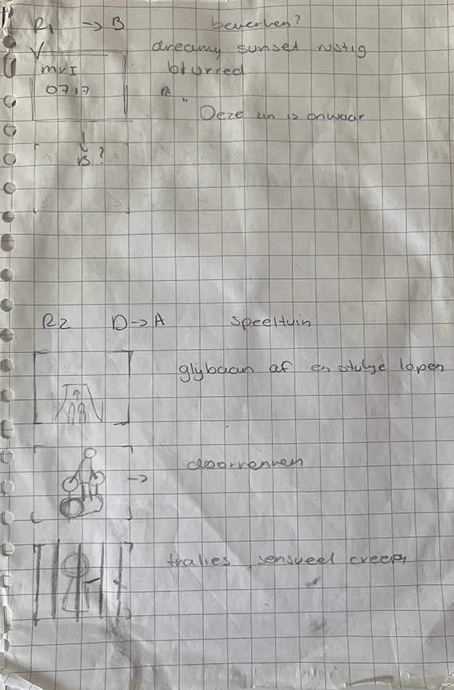

In a group project 'Gaming', we created a performative installation using water and light. This video is a work of the documentation of that performance. With the images, I try to shape this new world.
My celestrial body is a metaphor for seeing yourself in an extraordinary and superhuman light. It is an exploration of the self, the body and your constellation in the world. With layered video images, close-ups and a poetic-style text, we shaped this reflective quest.
For the course space and sound, we were assigned to make a 1-minute video. The subject, perspective and genre were free.
I thought it would be interesting to take an everyday habit for me as the subject. I set up my camera in the same place for a fortnight facing my microwave. Every time I went to use it, around two to three times a day, I turned on my camera and started filming.
Since the course was about sound, I thought it would be interesting to edit the video not by the image but by sound. I sorted all the footage by the sounds that occurred, sometimes down to the second. Then I started editing these clusters of video into the 1-minute video.

The theme of this assignment was 'Alternative Facts'. I immediately thought of the philosophical approach to facts and did some research. I wrote down interesting statements and assertions I came across. This eventually became the text of the video. For the visuals, we wanted to recreate a dreamlike world. Truth can be haunting, tricky and misleading. We wanted to play with transitions and different cuts to support this ambience.
This video was inspired by my walks to school everyday and the legend of the red thread. The legend originated in east asia and claims that everyone who is 'bound' to meet is connected by a red thread called the red thread of destiny. Nothing can be done to break this thread. You will meet, no matter how long it may take.
During my walks through the our small city I look around me at the other people. I wonder about their lifes, their style and whether we will someday meet. Originally this was a live performance where I read out the lines while sitting among the audience.
This was the first time I really worked with blender (3D modelling) and video. I created and designed the planets in blender and then 'filmed' and rendered them with a camera within the software. I found the whole process of shading the planets and the different possibilities very instructive. the technicallity of how you then film these scenes I found very interesting. I am a fan of animation films like pixar and disney and this gave me a small insight into that world.
For this video I went to different places in and outside of the city Maastricht where I live and study. I looked at buildings, nature, waste, people and much more. I entered these spaces as an observer and explorer. After watching the video's that I took, I wrote a text to go with the video. Originally this was a live performance where I read out the script while sitting among the audience.